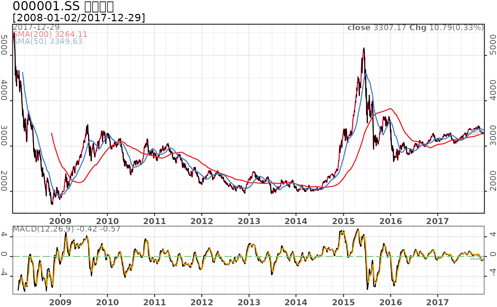
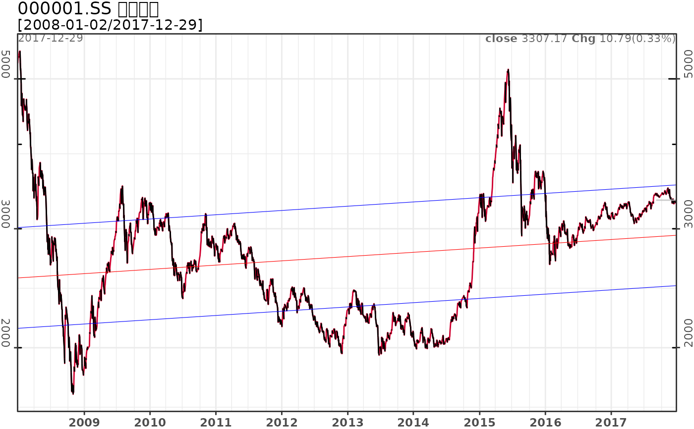
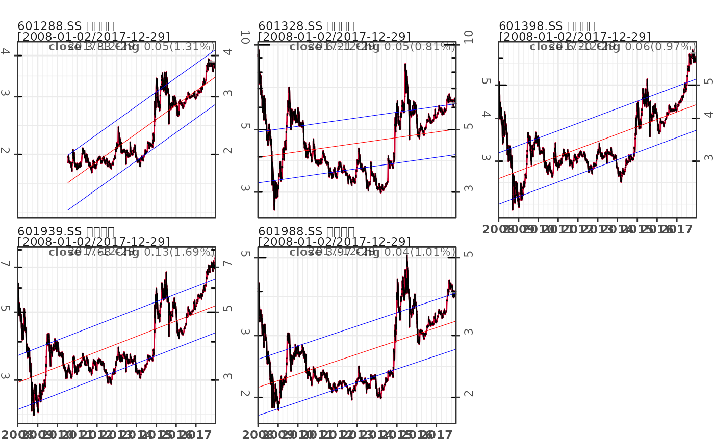
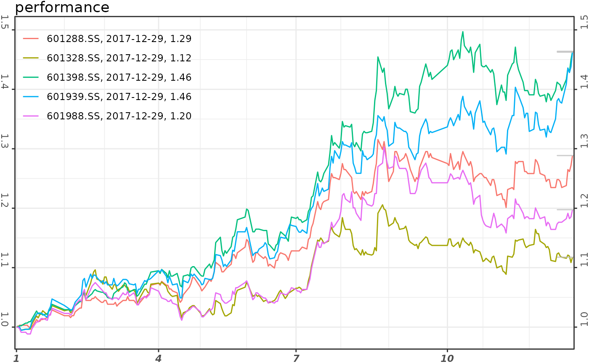

pq_plot provides an easy way to create charts for time series dataset based on predefined formats.
pq_plot(dt, chart_type = "line", freq = NULL, date_range = "max", from = NULL, to = Sys.Date(), x = "close|value", addti = list(volume = list()), linear_trend = NULL, perf = FALSE, yaxis_log = FALSE, color_up = "#CF002F", color_down = "#000000", multi_series = list(nrow = NULL, ncol = NULL), rm_weekend = NULL, title = NULL, interact = FALSE, ...)
Arguments
| dt | a list/dataframe of time series dataset |
|---|---|
| chart_type | chart type, including line, step, bar, candle. |
| freq | the frequency that the input daily data will converted to. It supports weekly, monthly, quarterly and yearly. |
| date_range | date range. Available value includes '1m'-'11m', 'ytd', 'max' and '1y'-'ny'. Default is max. |
| from | the start date. Default is NULL. If it is NULL, then calculate using date_range and end date. |
| to | the end date. Default is the current date. |
| x | the name of column display on chart. |
| addti | list of technical indicators or numerical columns in dt. For technical indicator, it is calculated via |
| linear_trend | a numeric vector. Default is NULL. If it is not NULL, then display linear trend lines on charts. |
| perf | logical, display the performance of input series. Default is FALSE. If it is TRUE, then call |
| yaxis_log | logical. Default is FALSE. |
| color_up | the color indicates price going up |
| color_down | the color indicates price going down |
| multi_series | a list. It display the number of ncol or nrow, and the yaxis scales in 'free'/'free_y'/'free_x'. Default is NULL. |
| rm_weekend | whether to remove weekends in xaxis. The default is TRUE for candle and bar chart, and is FALSE for line and step chart. |
| title | chart title. It will added to the front of chart title if it is specified. |
| interact | whether to create a interactive graphics, defaults to FALSE. |
| ... | ignored |
Examples
#> 1/1 ^000001# chart type pq_plot(ssec, chart_type = 'line', date_range = '6m') # line chart (default)#> $`000001.SS` #> TableGrob (2 x 1) "arrange": 2 grobs #> z cells name grob #> p0 1 (1-1,1-1) arrange gtable[layout] #> p1 2 (2-2,1-1) arrange gtable[layout] #># pq_plot(ssec, chart_type = 'step', date_range = '6m') # step line # pq_plot(ssec, chart_type = 'candle', date_range = '6m') # candlestick # pq_plot(ssec, chart_type = 'bar', date_range = '6m') # bar chart # add technical indicators pq_plot(ssec, chart_type = 'line', addti = list( sma = list(n = 200), sma = list(n = 50), macd = list() ))#> $`000001.SS` #> TableGrob (2 x 1) "arrange": 2 grobs #> z cells name grob #> p0 1 (1-1,1-1) arrange gtable[layout] #> p1 2 (2-2,1-1) arrange gtable[layout] #># linear trend with yaxis in log pq_plot(ssec, chart_type = 'line', linear_trend = c(-0.8, 0, 0.8), yaxis_log = TRUE)#> $`000001.SS` #> TableGrob (2 x 1) "arrange": 2 grobs #> z cells name grob #> p0 1 (1-1,1-1) arrange gtable[layout] #> p1 2 (2-2,1-1) arrange gtable[layout] #># multiple symbols # download datasets # dat = md_stock(c('FB', 'AMZN', 'AAPL', 'NFLX', 'GOOG'), date_range = 'max') dat = md_stock(c('^000001', '^399001', '^399006', '^000016', '^000300', '^000905'), date_range = 'max', source='163')#> 1/6 ^000001 #> 2/6 ^399001 #> 3/6 ^399006 #> 4/6 ^000016 #> 5/6 ^000300 #> 6/6 ^000905# linear trend pq_plot(dat, multi_series=list(nrow=2, scales='free_y'), linear_trend=c(-0.8, 0, 0.8))#> $multi_series#> Warning: conversion failure on '000001.SS 上证指数' in 'mbcsToSbcs': dot substituted for <e4>#> Warning: conversion failure on '000001.SS 上证指数' in 'mbcsToSbcs': dot substituted for <b8>#> Warning: conversion failure on '000001.SS 上证指数' in 'mbcsToSbcs': dot substituted for <8a>#> Warning: conversion failure on '000001.SS 上证指数' in 'mbcsToSbcs': dot substituted for <e8>#> Warning: conversion failure on '000001.SS 上证指数' in 'mbcsToSbcs': dot substituted for <af>#> Warning: conversion failure on '000001.SS 上证指数' in 'mbcsToSbcs': dot substituted for <81>#> Warning: conversion failure on '000001.SS 上证指数' in 'mbcsToSbcs': dot substituted for <e6>#> Warning: conversion failure on '000001.SS 上证指数' in 'mbcsToSbcs': dot substituted for <8c>#> Warning: conversion failure on '000001.SS 上证指数' in 'mbcsToSbcs': dot substituted for <87>#> Warning: conversion failure on '000001.SS 上证指数' in 'mbcsToSbcs': dot substituted for <e6>#> Warning: conversion failure on '000001.SS 上证指数' in 'mbcsToSbcs': dot substituted for <95>#> Warning: conversion failure on '000001.SS 上证指数' in 'mbcsToSbcs': dot substituted for <b0>#> Warning: conversion failure on '399001.SZ 深证成指' in 'mbcsToSbcs': dot substituted for <e6>#> Warning: conversion failure on '399001.SZ 深证成指' in 'mbcsToSbcs': dot substituted for <b7>#> Warning: conversion failure on '399001.SZ 深证成指' in 'mbcsToSbcs': dot substituted for <b1>#> Warning: conversion failure on '399001.SZ 深证成指' in 'mbcsToSbcs': dot substituted for <e8>#> Warning: conversion failure on '399001.SZ 深证成指' in 'mbcsToSbcs': dot substituted for <af>#> Warning: conversion failure on '399001.SZ 深证成指' in 'mbcsToSbcs': dot substituted for <81>#> Warning: conversion failure on '399001.SZ 深证成指' in 'mbcsToSbcs': dot substituted for <e6>#> Warning: conversion failure on '399001.SZ 深证成指' in 'mbcsToSbcs': dot substituted for <88>#> Warning: conversion failure on '399001.SZ 深证成指' in 'mbcsToSbcs': dot substituted for <90>#> Warning: conversion failure on '399001.SZ 深证成指' in 'mbcsToSbcs': dot substituted for <e6>#> Warning: conversion failure on '399001.SZ 深证成指' in 'mbcsToSbcs': dot substituted for <8c>#> Warning: conversion failure on '399001.SZ 深证成指' in 'mbcsToSbcs': dot substituted for <87>#> Warning: conversion failure on '000300.SS 沪深300' in 'mbcsToSbcs': dot substituted for <e6>#> Warning: conversion failure on '000300.SS 沪深300' in 'mbcsToSbcs': dot substituted for <b2>#> Warning: conversion failure on '000300.SS 沪深300' in 'mbcsToSbcs': dot substituted for <aa>#> Warning: conversion failure on '000300.SS 沪深300' in 'mbcsToSbcs': dot substituted for <e6>#> Warning: conversion failure on '000300.SS 沪深300' in 'mbcsToSbcs': dot substituted for <b7>#> Warning: conversion failure on '000300.SS 沪深300' in 'mbcsToSbcs': dot substituted for <b1>#> Warning: conversion failure on '000016.SS 上证50' in 'mbcsToSbcs': dot substituted for <e4>#> Warning: conversion failure on '000016.SS 上证50' in 'mbcsToSbcs': dot substituted for <b8>#> Warning: conversion failure on '000016.SS 上证50' in 'mbcsToSbcs': dot substituted for <8a>#> Warning: conversion failure on '000016.SS 上证50' in 'mbcsToSbcs': dot substituted for <e8>#> Warning: conversion failure on '000016.SS 上证50' in 'mbcsToSbcs': dot substituted for <af>#> Warning: conversion failure on '000016.SS 上证50' in 'mbcsToSbcs': dot substituted for <81>#> Warning: conversion failure on '000905.SS 中证500' in 'mbcsToSbcs': dot substituted for <e4>#> Warning: conversion failure on '000905.SS 中证500' in 'mbcsToSbcs': dot substituted for <b8>#> Warning: conversion failure on '000905.SS 中证500' in 'mbcsToSbcs': dot substituted for <ad>#> Warning: conversion failure on '000905.SS 中证500' in 'mbcsToSbcs': dot substituted for <e8>#> Warning: conversion failure on '000905.SS 中证500' in 'mbcsToSbcs': dot substituted for <af>#> Warning: conversion failure on '000905.SS 中证500' in 'mbcsToSbcs': dot substituted for <81>#> Warning: conversion failure on '399006.SZ 创业板指' in 'mbcsToSbcs': dot substituted for <e5>#> Warning: conversion failure on '399006.SZ 创业板指' in 'mbcsToSbcs': dot substituted for <88>#> Warning: conversion failure on '399006.SZ 创业板指' in 'mbcsToSbcs': dot substituted for <9b>#> Warning: conversion failure on '399006.SZ 创业板指' in 'mbcsToSbcs': dot substituted for <e4>#> Warning: conversion failure on '399006.SZ 创业板指' in 'mbcsToSbcs': dot substituted for <b8>#> Warning: conversion failure on '399006.SZ 创业板指' in 'mbcsToSbcs': dot substituted for <9a>#> Warning: conversion failure on '399006.SZ 创业板指' in 'mbcsToSbcs': dot substituted for <e6>#> Warning: conversion failure on '399006.SZ 创业板指' in 'mbcsToSbcs': dot substituted for <9d>#> Warning: conversion failure on '399006.SZ 创业板指' in 'mbcsToSbcs': dot substituted for <bf>#> Warning: conversion failure on '399006.SZ 创业板指' in 'mbcsToSbcs': dot substituted for <e6>#> Warning: conversion failure on '399006.SZ 创业板指' in 'mbcsToSbcs': dot substituted for <8c>#> Warning: conversion failure on '399006.SZ 创业板指' in 'mbcsToSbcs': dot substituted for <87>#> Warning: conversion failure on '000001.SS 上证指数' in 'mbcsToSbcs': dot substituted for <e4>#> Warning: conversion failure on '000001.SS 上证指数' in 'mbcsToSbcs': dot substituted for <b8>#> Warning: conversion failure on '000001.SS 上证指数' in 'mbcsToSbcs': dot substituted for <8a>#> Warning: conversion failure on '000001.SS 上证指数' in 'mbcsToSbcs': dot substituted for <e8>#> Warning: conversion failure on '000001.SS 上证指数' in 'mbcsToSbcs': dot substituted for <af>#> Warning: conversion failure on '000001.SS 上证指数' in 'mbcsToSbcs': dot substituted for <81>#> Warning: conversion failure on '000001.SS 上证指数' in 'mbcsToSbcs': dot substituted for <e6>#> Warning: conversion failure on '000001.SS 上证指数' in 'mbcsToSbcs': dot substituted for <8c>#> Warning: conversion failure on '000001.SS 上证指数' in 'mbcsToSbcs': dot substituted for <87>#> Warning: conversion failure on '000001.SS 上证指数' in 'mbcsToSbcs': dot substituted for <e6>#> Warning: conversion failure on '000001.SS 上证指数' in 'mbcsToSbcs': dot substituted for <95>#> Warning: conversion failure on '000001.SS 上证指数' in 'mbcsToSbcs': dot substituted for <b0>#> Warning: conversion failure on '399001.SZ 深证成指' in 'mbcsToSbcs': dot substituted for <e6>#> Warning: conversion failure on '399001.SZ 深证成指' in 'mbcsToSbcs': dot substituted for <b7>#> Warning: conversion failure on '399001.SZ 深证成指' in 'mbcsToSbcs': dot substituted for <b1>#> Warning: conversion failure on '399001.SZ 深证成指' in 'mbcsToSbcs': dot substituted for <e8>#> Warning: conversion failure on '399001.SZ 深证成指' in 'mbcsToSbcs': dot substituted for <af>#> Warning: conversion failure on '399001.SZ 深证成指' in 'mbcsToSbcs': dot substituted for <81>#> Warning: conversion failure on '399001.SZ 深证成指' in 'mbcsToSbcs': dot substituted for <e6>#> Warning: conversion failure on '399001.SZ 深证成指' in 'mbcsToSbcs': dot substituted for <88>#> Warning: conversion failure on '399001.SZ 深证成指' in 'mbcsToSbcs': dot substituted for <90>#> Warning: conversion failure on '399001.SZ 深证成指' in 'mbcsToSbcs': dot substituted for <e6>#> Warning: conversion failure on '399001.SZ 深证成指' in 'mbcsToSbcs': dot substituted for <8c>#> Warning: conversion failure on '399001.SZ 深证成指' in 'mbcsToSbcs': dot substituted for <87>#> Warning: conversion failure on '000300.SS 沪深300' in 'mbcsToSbcs': dot substituted for <e6>#> Warning: conversion failure on '000300.SS 沪深300' in 'mbcsToSbcs': dot substituted for <b2>#> Warning: conversion failure on '000300.SS 沪深300' in 'mbcsToSbcs': dot substituted for <aa>#> Warning: conversion failure on '000300.SS 沪深300' in 'mbcsToSbcs': dot substituted for <e6>#> Warning: conversion failure on '000300.SS 沪深300' in 'mbcsToSbcs': dot substituted for <b7>#> Warning: conversion failure on '000300.SS 沪深300' in 'mbcsToSbcs': dot substituted for <b1>#> Warning: conversion failure on '000016.SS 上证50' in 'mbcsToSbcs': dot substituted for <e4>#> Warning: conversion failure on '000016.SS 上证50' in 'mbcsToSbcs': dot substituted for <b8>#> Warning: conversion failure on '000016.SS 上证50' in 'mbcsToSbcs': dot substituted for <8a>#> Warning: conversion failure on '000016.SS 上证50' in 'mbcsToSbcs': dot substituted for <e8>#> Warning: conversion failure on '000016.SS 上证50' in 'mbcsToSbcs': dot substituted for <af>#> Warning: conversion failure on '000016.SS 上证50' in 'mbcsToSbcs': dot substituted for <81>#> Warning: conversion failure on '000905.SS 中证500' in 'mbcsToSbcs': dot substituted for <e4>#> Warning: conversion failure on '000905.SS 中证500' in 'mbcsToSbcs': dot substituted for <b8>#> Warning: conversion failure on '000905.SS 中证500' in 'mbcsToSbcs': dot substituted for <ad>#> Warning: conversion failure on '000905.SS 中证500' in 'mbcsToSbcs': dot substituted for <e8>#> Warning: conversion failure on '000905.SS 中证500' in 'mbcsToSbcs': dot substituted for <af>#> Warning: conversion failure on '000905.SS 中证500' in 'mbcsToSbcs': dot substituted for <81>#> Warning: conversion failure on '399006.SZ 创业板指' in 'mbcsToSbcs': dot substituted for <e5>#> Warning: conversion failure on '399006.SZ 创业板指' in 'mbcsToSbcs': dot substituted for <88>#> Warning: conversion failure on '399006.SZ 创业板指' in 'mbcsToSbcs': dot substituted for <9b>#> Warning: conversion failure on '399006.SZ 创业板指' in 'mbcsToSbcs': dot substituted for <e4>#> Warning: conversion failure on '399006.SZ 创业板指' in 'mbcsToSbcs': dot substituted for <b8>#> Warning: conversion failure on '399006.SZ 创业板指' in 'mbcsToSbcs': dot substituted for <9a>#> Warning: conversion failure on '399006.SZ 创业板指' in 'mbcsToSbcs': dot substituted for <e6>#> Warning: conversion failure on '399006.SZ 创业板指' in 'mbcsToSbcs': dot substituted for <9d>#> Warning: conversion failure on '399006.SZ 创业板指' in 'mbcsToSbcs': dot substituted for <bf>#> Warning: conversion failure on '399006.SZ 创业板指' in 'mbcsToSbcs': dot substituted for <e6>#> Warning: conversion failure on '399006.SZ 创业板指' in 'mbcsToSbcs': dot substituted for <8c>#> Warning: conversion failure on '399006.SZ 创业板指' in 'mbcsToSbcs': dot substituted for <87>#> Warning: conversion failure on '000001.SS 上证指数' in 'mbcsToSbcs': dot substituted for <e4>#> Warning: conversion failure on '000001.SS 上证指数' in 'mbcsToSbcs': dot substituted for <b8>#> Warning: conversion failure on '000001.SS 上证指数' in 'mbcsToSbcs': dot substituted for <8a>#> Warning: conversion failure on '000001.SS 上证指数' in 'mbcsToSbcs': dot substituted for <e8>#> Warning: conversion failure on '000001.SS 上证指数' in 'mbcsToSbcs': dot substituted for <af>#> Warning: conversion failure on '000001.SS 上证指数' in 'mbcsToSbcs': dot substituted for <81>#> Warning: conversion failure on '000001.SS 上证指数' in 'mbcsToSbcs': dot substituted for <e6>#> Warning: conversion failure on '000001.SS 上证指数' in 'mbcsToSbcs': dot substituted for <8c>#> Warning: conversion failure on '000001.SS 上证指数' in 'mbcsToSbcs': dot substituted for <87>#> Warning: conversion failure on '000001.SS 上证指数' in 'mbcsToSbcs': dot substituted for <e6>#> Warning: conversion failure on '000001.SS 上证指数' in 'mbcsToSbcs': dot substituted for <95>#> Warning: conversion failure on '000001.SS 上证指数' in 'mbcsToSbcs': dot substituted for <b0>#> Warning: conversion failure on '399001.SZ 深证成指' in 'mbcsToSbcs': dot substituted for <e6>#> Warning: conversion failure on '399001.SZ 深证成指' in 'mbcsToSbcs': dot substituted for <b7>#> Warning: conversion failure on '399001.SZ 深证成指' in 'mbcsToSbcs': dot substituted for <b1>#> Warning: conversion failure on '399001.SZ 深证成指' in 'mbcsToSbcs': dot substituted for <e8>#> Warning: conversion failure on '399001.SZ 深证成指' in 'mbcsToSbcs': dot substituted for <af>#> Warning: conversion failure on '399001.SZ 深证成指' in 'mbcsToSbcs': dot substituted for <81>#> Warning: conversion failure on '399001.SZ 深证成指' in 'mbcsToSbcs': dot substituted for <e6>#> Warning: conversion failure on '399001.SZ 深证成指' in 'mbcsToSbcs': dot substituted for <88>#> Warning: conversion failure on '399001.SZ 深证成指' in 'mbcsToSbcs': dot substituted for <90>#> Warning: conversion failure on '399001.SZ 深证成指' in 'mbcsToSbcs': dot substituted for <e6>#> Warning: conversion failure on '399001.SZ 深证成指' in 'mbcsToSbcs': dot substituted for <8c>#> Warning: conversion failure on '399001.SZ 深证成指' in 'mbcsToSbcs': dot substituted for <87>#> Warning: conversion failure on '000300.SS 沪深300' in 'mbcsToSbcs': dot substituted for <e6>#> Warning: conversion failure on '000300.SS 沪深300' in 'mbcsToSbcs': dot substituted for <b2>#> Warning: conversion failure on '000300.SS 沪深300' in 'mbcsToSbcs': dot substituted for <aa>#> Warning: conversion failure on '000300.SS 沪深300' in 'mbcsToSbcs': dot substituted for <e6>#> Warning: conversion failure on '000300.SS 沪深300' in 'mbcsToSbcs': dot substituted for <b7>#> Warning: conversion failure on '000300.SS 沪深300' in 'mbcsToSbcs': dot substituted for <b1>#> Warning: conversion failure on '000016.SS 上证50' in 'mbcsToSbcs': dot substituted for <e4>#> Warning: conversion failure on '000016.SS 上证50' in 'mbcsToSbcs': dot substituted for <b8>#> Warning: conversion failure on '000016.SS 上证50' in 'mbcsToSbcs': dot substituted for <8a>#> Warning: conversion failure on '000016.SS 上证50' in 'mbcsToSbcs': dot substituted for <e8>#> Warning: conversion failure on '000016.SS 上证50' in 'mbcsToSbcs': dot substituted for <af>#> Warning: conversion failure on '000016.SS 上证50' in 'mbcsToSbcs': dot substituted for <81>#> Warning: conversion failure on '000905.SS 中证500' in 'mbcsToSbcs': dot substituted for <e4>#> Warning: conversion failure on '000905.SS 中证500' in 'mbcsToSbcs': dot substituted for <b8>#> Warning: conversion failure on '000905.SS 中证500' in 'mbcsToSbcs': dot substituted for <ad>#> Warning: conversion failure on '000905.SS 中证500' in 'mbcsToSbcs': dot substituted for <e8>#> Warning: conversion failure on '000905.SS 中证500' in 'mbcsToSbcs': dot substituted for <af>#> Warning: conversion failure on '000905.SS 中证500' in 'mbcsToSbcs': dot substituted for <81>#> Warning: conversion failure on '399006.SZ 创业板指' in 'mbcsToSbcs': dot substituted for <e5>#> Warning: conversion failure on '399006.SZ 创业板指' in 'mbcsToSbcs': dot substituted for <88>#> Warning: conversion failure on '399006.SZ 创业板指' in 'mbcsToSbcs': dot substituted for <9b>#> Warning: conversion failure on '399006.SZ 创业板指' in 'mbcsToSbcs': dot substituted for <e4>#> Warning: conversion failure on '399006.SZ 创业板指' in 'mbcsToSbcs': dot substituted for <b8>#> Warning: conversion failure on '399006.SZ 创业板指' in 'mbcsToSbcs': dot substituted for <9a>#> Warning: conversion failure on '399006.SZ 创业板指' in 'mbcsToSbcs': dot substituted for <e6>#> Warning: conversion failure on '399006.SZ 创业板指' in 'mbcsToSbcs': dot substituted for <9d>#> Warning: conversion failure on '399006.SZ 创业板指' in 'mbcsToSbcs': dot substituted for <bf>#> Warning: conversion failure on '399006.SZ 创业板指' in 'mbcsToSbcs': dot substituted for <e6>#> Warning: conversion failure on '399006.SZ 创业板指' in 'mbcsToSbcs': dot substituted for <8c>#> Warning: conversion failure on '399006.SZ 创业板指' in 'mbcsToSbcs': dot substituted for <87>#> Warning: conversion failure on '000001.SS 上证指数' in 'mbcsToSbcs': dot substituted for <e4>#> Warning: conversion failure on '000001.SS 上证指数' in 'mbcsToSbcs': dot substituted for <b8>#> Warning: conversion failure on '000001.SS 上证指数' in 'mbcsToSbcs': dot substituted for <8a>#> Warning: conversion failure on '000001.SS 上证指数' in 'mbcsToSbcs': dot substituted for <e8>#> Warning: conversion failure on '000001.SS 上证指数' in 'mbcsToSbcs': dot substituted for <af>#> Warning: conversion failure on '000001.SS 上证指数' in 'mbcsToSbcs': dot substituted for <81>#> Warning: conversion failure on '000001.SS 上证指数' in 'mbcsToSbcs': dot substituted for <e6>#> Warning: conversion failure on '000001.SS 上证指数' in 'mbcsToSbcs': dot substituted for <8c>#> Warning: conversion failure on '000001.SS 上证指数' in 'mbcsToSbcs': dot substituted for <87>#> Warning: conversion failure on '000001.SS 上证指数' in 'mbcsToSbcs': dot substituted for <e6>#> Warning: conversion failure on '000001.SS 上证指数' in 'mbcsToSbcs': dot substituted for <95>#> Warning: conversion failure on '000001.SS 上证指数' in 'mbcsToSbcs': dot substituted for <b0>#> Warning: conversion failure on '399001.SZ 深证成指' in 'mbcsToSbcs': dot substituted for <e6>#> Warning: conversion failure on '399001.SZ 深证成指' in 'mbcsToSbcs': dot substituted for <b7>#> Warning: conversion failure on '399001.SZ 深证成指' in 'mbcsToSbcs': dot substituted for <b1>#> Warning: conversion failure on '399001.SZ 深证成指' in 'mbcsToSbcs': dot substituted for <e8>#> Warning: conversion failure on '399001.SZ 深证成指' in 'mbcsToSbcs': dot substituted for <af>#> Warning: conversion failure on '399001.SZ 深证成指' in 'mbcsToSbcs': dot substituted for <81>#> Warning: conversion failure on '399001.SZ 深证成指' in 'mbcsToSbcs': dot substituted for <e6>#> Warning: conversion failure on '399001.SZ 深证成指' in 'mbcsToSbcs': dot substituted for <88>#> Warning: conversion failure on '399001.SZ 深证成指' in 'mbcsToSbcs': dot substituted for <90>#> Warning: conversion failure on '399001.SZ 深证成指' in 'mbcsToSbcs': dot substituted for <e6>#> Warning: conversion failure on '399001.SZ 深证成指' in 'mbcsToSbcs': dot substituted for <8c>#> Warning: conversion failure on '399001.SZ 深证成指' in 'mbcsToSbcs': dot substituted for <87>#> Warning: conversion failure on '000300.SS 沪深300' in 'mbcsToSbcs': dot substituted for <e6>#> Warning: conversion failure on '000300.SS 沪深300' in 'mbcsToSbcs': dot substituted for <b2>#> Warning: conversion failure on '000300.SS 沪深300' in 'mbcsToSbcs': dot substituted for <aa>#> Warning: conversion failure on '000300.SS 沪深300' in 'mbcsToSbcs': dot substituted for <e6>#> Warning: conversion failure on '000300.SS 沪深300' in 'mbcsToSbcs': dot substituted for <b7>#> Warning: conversion failure on '000300.SS 沪深300' in 'mbcsToSbcs': dot substituted for <b1>#> Warning: conversion failure on '000016.SS 上证50' in 'mbcsToSbcs': dot substituted for <e4>#> Warning: conversion failure on '000016.SS 上证50' in 'mbcsToSbcs': dot substituted for <b8>#> Warning: conversion failure on '000016.SS 上证50' in 'mbcsToSbcs': dot substituted for <8a>#> Warning: conversion failure on '000016.SS 上证50' in 'mbcsToSbcs': dot substituted for <e8>#> Warning: conversion failure on '000016.SS 上证50' in 'mbcsToSbcs': dot substituted for <af>#> Warning: conversion failure on '000016.SS 上证50' in 'mbcsToSbcs': dot substituted for <81>#> Warning: conversion failure on '000905.SS 中证500' in 'mbcsToSbcs': dot substituted for <e4>#> Warning: conversion failure on '000905.SS 中证500' in 'mbcsToSbcs': dot substituted for <b8>#> Warning: conversion failure on '000905.SS 中证500' in 'mbcsToSbcs': dot substituted for <ad>#> Warning: conversion failure on '000905.SS 中证500' in 'mbcsToSbcs': dot substituted for <e8>#> Warning: conversion failure on '000905.SS 中证500' in 'mbcsToSbcs': dot substituted for <af>#> Warning: conversion failure on '000905.SS 中证500' in 'mbcsToSbcs': dot substituted for <81>#> Warning: conversion failure on '399006.SZ 创业板指' in 'mbcsToSbcs': dot substituted for <e5>#> Warning: conversion failure on '399006.SZ 创业板指' in 'mbcsToSbcs': dot substituted for <88>#> Warning: conversion failure on '399006.SZ 创业板指' in 'mbcsToSbcs': dot substituted for <9b>#> Warning: conversion failure on '399006.SZ 创业板指' in 'mbcsToSbcs': dot substituted for <e4>#> Warning: conversion failure on '399006.SZ 创业板指' in 'mbcsToSbcs': dot substituted for <b8>#> Warning: conversion failure on '399006.SZ 创业板指' in 'mbcsToSbcs': dot substituted for <9a>#> Warning: conversion failure on '399006.SZ 创业板指' in 'mbcsToSbcs': dot substituted for <e6>#> Warning: conversion failure on '399006.SZ 创业板指' in 'mbcsToSbcs': dot substituted for <9d>#> Warning: conversion failure on '399006.SZ 创业板指' in 'mbcsToSbcs': dot substituted for <bf>#> Warning: conversion failure on '399006.SZ 创业板指' in 'mbcsToSbcs': dot substituted for <e6>#> Warning: conversion failure on '399006.SZ 创业板指' in 'mbcsToSbcs': dot substituted for <8c>#> Warning: conversion failure on '399006.SZ 创业板指' in 'mbcsToSbcs': dot substituted for <87>#> Warning: conversion failure on '000016.SS 上证50' in 'mbcsToSbcs': dot substituted for <e4>#> Warning: conversion failure on '000016.SS 上证50' in 'mbcsToSbcs': dot substituted for <b8>#> Warning: conversion failure on '000016.SS 上证50' in 'mbcsToSbcs': dot substituted for <8a>#> Warning: conversion failure on '000016.SS 上证50' in 'mbcsToSbcs': dot substituted for <e8>#> Warning: conversion failure on '000016.SS 上证50' in 'mbcsToSbcs': dot substituted for <af>#> Warning: conversion failure on '000016.SS 上证50' in 'mbcsToSbcs': dot substituted for <81>#> Warning: conversion failure on '000905.SS 中证500' in 'mbcsToSbcs': dot substituted for <e4>#> Warning: conversion failure on '000905.SS 中证500' in 'mbcsToSbcs': dot substituted for <b8>#> Warning: conversion failure on '000905.SS 中证500' in 'mbcsToSbcs': dot substituted for <ad>#> Warning: conversion failure on '000905.SS 中证500' in 'mbcsToSbcs': dot substituted for <e8>#> Warning: conversion failure on '000905.SS 中证500' in 'mbcsToSbcs': dot substituted for <af>#> Warning: conversion failure on '000905.SS 中证500' in 'mbcsToSbcs': dot substituted for <81>#> Warning: conversion failure on '399006.SZ 创业板指' in 'mbcsToSbcs': dot substituted for <e5>#> Warning: conversion failure on '399006.SZ 创业板指' in 'mbcsToSbcs': dot substituted for <88>#> Warning: conversion failure on '399006.SZ 创业板指' in 'mbcsToSbcs': dot substituted for <9b>#> Warning: conversion failure on '399006.SZ 创业板指' in 'mbcsToSbcs': dot substituted for <e4>#> Warning: conversion failure on '399006.SZ 创业板指' in 'mbcsToSbcs': dot substituted for <b8>#> Warning: conversion failure on '399006.SZ 创业板指' in 'mbcsToSbcs': dot substituted for <9a>#> Warning: conversion failure on '399006.SZ 创业板指' in 'mbcsToSbcs': dot substituted for <e6>#> Warning: conversion failure on '399006.SZ 创业板指' in 'mbcsToSbcs': dot substituted for <9d>#> Warning: conversion failure on '399006.SZ 创业板指' in 'mbcsToSbcs': dot substituted for <bf>#> Warning: conversion failure on '399006.SZ 创业板指' in 'mbcsToSbcs': dot substituted for <e6>#> Warning: conversion failure on '399006.SZ 创业板指' in 'mbcsToSbcs': dot substituted for <8c>#> Warning: conversion failure on '399006.SZ 创业板指' in 'mbcsToSbcs': dot substituted for <87>#> Warning: conversion failure on '000001.SS 上证指数' in 'mbcsToSbcs': dot substituted for <e4>#> Warning: conversion failure on '000001.SS 上证指数' in 'mbcsToSbcs': dot substituted for <b8>#> Warning: conversion failure on '000001.SS 上证指数' in 'mbcsToSbcs': dot substituted for <8a>#> Warning: conversion failure on '000001.SS 上证指数' in 'mbcsToSbcs': dot substituted for <e8>#> Warning: conversion failure on '000001.SS 上证指数' in 'mbcsToSbcs': dot substituted for <af>#> Warning: conversion failure on '000001.SS 上证指数' in 'mbcsToSbcs': dot substituted for <81>#> Warning: conversion failure on '000001.SS 上证指数' in 'mbcsToSbcs': dot substituted for <e6>#> Warning: conversion failure on '000001.SS 上证指数' in 'mbcsToSbcs': dot substituted for <8c>#> Warning: conversion failure on '000001.SS 上证指数' in 'mbcsToSbcs': dot substituted for <87>#> Warning: conversion failure on '000001.SS 上证指数' in 'mbcsToSbcs': dot substituted for <e6>#> Warning: conversion failure on '000001.SS 上证指数' in 'mbcsToSbcs': dot substituted for <95>#> Warning: conversion failure on '000001.SS 上证指数' in 'mbcsToSbcs': dot substituted for <b0>#> Warning: conversion failure on '399001.SZ 深证成指' in 'mbcsToSbcs': dot substituted for <e6>#> Warning: conversion failure on '399001.SZ 深证成指' in 'mbcsToSbcs': dot substituted for <b7>#> Warning: conversion failure on '399001.SZ 深证成指' in 'mbcsToSbcs': dot substituted for <b1>#> Warning: conversion failure on '399001.SZ 深证成指' in 'mbcsToSbcs': dot substituted for <e8>#> Warning: conversion failure on '399001.SZ 深证成指' in 'mbcsToSbcs': dot substituted for <af>#> Warning: conversion failure on '399001.SZ 深证成指' in 'mbcsToSbcs': dot substituted for <81>#> Warning: conversion failure on '399001.SZ 深证成指' in 'mbcsToSbcs': dot substituted for <e6>#> Warning: conversion failure on '399001.SZ 深证成指' in 'mbcsToSbcs': dot substituted for <88>#> Warning: conversion failure on '399001.SZ 深证成指' in 'mbcsToSbcs': dot substituted for <90>#> Warning: conversion failure on '399001.SZ 深证成指' in 'mbcsToSbcs': dot substituted for <e6>#> Warning: conversion failure on '399001.SZ 深证成指' in 'mbcsToSbcs': dot substituted for <8c>#> Warning: conversion failure on '399001.SZ 深证成指' in 'mbcsToSbcs': dot substituted for <87>#> Warning: conversion failure on '000300.SS 沪深300' in 'mbcsToSbcs': dot substituted for <e6>#> Warning: conversion failure on '000300.SS 沪深300' in 'mbcsToSbcs': dot substituted for <b2>#> Warning: conversion failure on '000300.SS 沪深300' in 'mbcsToSbcs': dot substituted for <aa>#> Warning: conversion failure on '000300.SS 沪深300' in 'mbcsToSbcs': dot substituted for <e6>#> Warning: conversion failure on '000300.SS 沪深300' in 'mbcsToSbcs': dot substituted for <b7>#> Warning: conversion failure on '000300.SS 沪深300' in 'mbcsToSbcs': dot substituted for <b1>#>pq_plot(dat, multi_series=list(nrow=2, scales='free_y'), linear_trend=c(-0.8, 0, 0.8), yaxis_log=TRUE)#> $multi_series#> Warning: conversion failure on '000001.SS 上证指数' in 'mbcsToSbcs': dot substituted for <e4>#> Warning: conversion failure on '000001.SS 上证指数' in 'mbcsToSbcs': dot substituted for <b8>#> Warning: conversion failure on '000001.SS 上证指数' in 'mbcsToSbcs': dot substituted for <8a>#> Warning: conversion failure on '000001.SS 上证指数' in 'mbcsToSbcs': dot substituted for <e8>#> Warning: conversion failure on '000001.SS 上证指数' in 'mbcsToSbcs': dot substituted for <af>#> Warning: conversion failure on '000001.SS 上证指数' in 'mbcsToSbcs': dot substituted for <81>#> Warning: conversion failure on '000001.SS 上证指数' in 'mbcsToSbcs': dot substituted for <e6>#> Warning: conversion failure on '000001.SS 上证指数' in 'mbcsToSbcs': dot substituted for <8c>#> Warning: conversion failure on '000001.SS 上证指数' in 'mbcsToSbcs': dot substituted for <87>#> Warning: conversion failure on '000001.SS 上证指数' in 'mbcsToSbcs': dot substituted for <e6>#> Warning: conversion failure on '000001.SS 上证指数' in 'mbcsToSbcs': dot substituted for <95>#> Warning: conversion failure on '000001.SS 上证指数' in 'mbcsToSbcs': dot substituted for <b0>#> Warning: conversion failure on '399001.SZ 深证成指' in 'mbcsToSbcs': dot substituted for <e6>#> Warning: conversion failure on '399001.SZ 深证成指' in 'mbcsToSbcs': dot substituted for <b7>#> Warning: conversion failure on '399001.SZ 深证成指' in 'mbcsToSbcs': dot substituted for <b1>#> Warning: conversion failure on '399001.SZ 深证成指' in 'mbcsToSbcs': dot substituted for <e8>#> Warning: conversion failure on '399001.SZ 深证成指' in 'mbcsToSbcs': dot substituted for <af>#> Warning: conversion failure on '399001.SZ 深证成指' in 'mbcsToSbcs': dot substituted for <81>#> Warning: conversion failure on '399001.SZ 深证成指' in 'mbcsToSbcs': dot substituted for <e6>#> Warning: conversion failure on '399001.SZ 深证成指' in 'mbcsToSbcs': dot substituted for <88>#> Warning: conversion failure on '399001.SZ 深证成指' in 'mbcsToSbcs': dot substituted for <90>#> Warning: conversion failure on '399001.SZ 深证成指' in 'mbcsToSbcs': dot substituted for <e6>#> Warning: conversion failure on '399001.SZ 深证成指' in 'mbcsToSbcs': dot substituted for <8c>#> Warning: conversion failure on '399001.SZ 深证成指' in 'mbcsToSbcs': dot substituted for <87>#> Warning: conversion failure on '000300.SS 沪深300' in 'mbcsToSbcs': dot substituted for <e6>#> Warning: conversion failure on '000300.SS 沪深300' in 'mbcsToSbcs': dot substituted for <b2>#> Warning: conversion failure on '000300.SS 沪深300' in 'mbcsToSbcs': dot substituted for <aa>#> Warning: conversion failure on '000300.SS 沪深300' in 'mbcsToSbcs': dot substituted for <e6>#> Warning: conversion failure on '000300.SS 沪深300' in 'mbcsToSbcs': dot substituted for <b7>#> Warning: conversion failure on '000300.SS 沪深300' in 'mbcsToSbcs': dot substituted for <b1>#> Warning: conversion failure on '000016.SS 上证50' in 'mbcsToSbcs': dot substituted for <e4>#> Warning: conversion failure on '000016.SS 上证50' in 'mbcsToSbcs': dot substituted for <b8>#> Warning: conversion failure on '000016.SS 上证50' in 'mbcsToSbcs': dot substituted for <8a>#> Warning: conversion failure on '000016.SS 上证50' in 'mbcsToSbcs': dot substituted for <e8>#> Warning: conversion failure on '000016.SS 上证50' in 'mbcsToSbcs': dot substituted for <af>#> Warning: conversion failure on '000016.SS 上证50' in 'mbcsToSbcs': dot substituted for <81>#> Warning: conversion failure on '000905.SS 中证500' in 'mbcsToSbcs': dot substituted for <e4>#> Warning: conversion failure on '000905.SS 中证500' in 'mbcsToSbcs': dot substituted for <b8>#> Warning: conversion failure on '000905.SS 中证500' in 'mbcsToSbcs': dot substituted for <ad>#> Warning: conversion failure on '000905.SS 中证500' in 'mbcsToSbcs': dot substituted for <e8>#> Warning: conversion failure on '000905.SS 中证500' in 'mbcsToSbcs': dot substituted for <af>#> Warning: conversion failure on '000905.SS 中证500' in 'mbcsToSbcs': dot substituted for <81>#> Warning: conversion failure on '399006.SZ 创业板指' in 'mbcsToSbcs': dot substituted for <e5>#> Warning: conversion failure on '399006.SZ 创业板指' in 'mbcsToSbcs': dot substituted for <88>#> Warning: conversion failure on '399006.SZ 创业板指' in 'mbcsToSbcs': dot substituted for <9b>#> Warning: conversion failure on '399006.SZ 创业板指' in 'mbcsToSbcs': dot substituted for <e4>#> Warning: conversion failure on '399006.SZ 创业板指' in 'mbcsToSbcs': dot substituted for <b8>#> Warning: conversion failure on '399006.SZ 创业板指' in 'mbcsToSbcs': dot substituted for <9a>#> Warning: conversion failure on '399006.SZ 创业板指' in 'mbcsToSbcs': dot substituted for <e6>#> Warning: conversion failure on '399006.SZ 创业板指' in 'mbcsToSbcs': dot substituted for <9d>#> Warning: conversion failure on '399006.SZ 创业板指' in 'mbcsToSbcs': dot substituted for <bf>#> Warning: conversion failure on '399006.SZ 创业板指' in 'mbcsToSbcs': dot substituted for <e6>#> Warning: conversion failure on '399006.SZ 创业板指' in 'mbcsToSbcs': dot substituted for <8c>#> Warning: conversion failure on '399006.SZ 创业板指' in 'mbcsToSbcs': dot substituted for <87>#> Warning: conversion failure on '000001.SS 上证指数' in 'mbcsToSbcs': dot substituted for <e4>#> Warning: conversion failure on '000001.SS 上证指数' in 'mbcsToSbcs': dot substituted for <b8>#> Warning: conversion failure on '000001.SS 上证指数' in 'mbcsToSbcs': dot substituted for <8a>#> Warning: conversion failure on '000001.SS 上证指数' in 'mbcsToSbcs': dot substituted for <e8>#> Warning: conversion failure on '000001.SS 上证指数' in 'mbcsToSbcs': dot substituted for <af>#> Warning: conversion failure on '000001.SS 上证指数' in 'mbcsToSbcs': dot substituted for <81>#> Warning: conversion failure on '000001.SS 上证指数' in 'mbcsToSbcs': dot substituted for <e6>#> Warning: conversion failure on '000001.SS 上证指数' in 'mbcsToSbcs': dot substituted for <8c>#> Warning: conversion failure on '000001.SS 上证指数' in 'mbcsToSbcs': dot substituted for <87>#> Warning: conversion failure on '000001.SS 上证指数' in 'mbcsToSbcs': dot substituted for <e6>#> Warning: conversion failure on '000001.SS 上证指数' in 'mbcsToSbcs': dot substituted for <95>#> Warning: conversion failure on '000001.SS 上证指数' in 'mbcsToSbcs': dot substituted for <b0>#> Warning: conversion failure on '399001.SZ 深证成指' in 'mbcsToSbcs': dot substituted for <e6>#> Warning: conversion failure on '399001.SZ 深证成指' in 'mbcsToSbcs': dot substituted for <b7>#> Warning: conversion failure on '399001.SZ 深证成指' in 'mbcsToSbcs': dot substituted for <b1>#> Warning: conversion failure on '399001.SZ 深证成指' in 'mbcsToSbcs': dot substituted for <e8>#> Warning: conversion failure on '399001.SZ 深证成指' in 'mbcsToSbcs': dot substituted for <af>#> Warning: conversion failure on '399001.SZ 深证成指' in 'mbcsToSbcs': dot substituted for <81>#> Warning: conversion failure on '399001.SZ 深证成指' in 'mbcsToSbcs': dot substituted for <e6>#> Warning: conversion failure on '399001.SZ 深证成指' in 'mbcsToSbcs': dot substituted for <88>#> Warning: conversion failure on '399001.SZ 深证成指' in 'mbcsToSbcs': dot substituted for <90>#> Warning: conversion failure on '399001.SZ 深证成指' in 'mbcsToSbcs': dot substituted for <e6>#> Warning: conversion failure on '399001.SZ 深证成指' in 'mbcsToSbcs': dot substituted for <8c>#> Warning: conversion failure on '399001.SZ 深证成指' in 'mbcsToSbcs': dot substituted for <87>#> Warning: conversion failure on '000300.SS 沪深300' in 'mbcsToSbcs': dot substituted for <e6>#> Warning: conversion failure on '000300.SS 沪深300' in 'mbcsToSbcs': dot substituted for <b2>#> Warning: conversion failure on '000300.SS 沪深300' in 'mbcsToSbcs': dot substituted for <aa>#> Warning: conversion failure on '000300.SS 沪深300' in 'mbcsToSbcs': dot substituted for <e6>#> Warning: conversion failure on '000300.SS 沪深300' in 'mbcsToSbcs': dot substituted for <b7>#> Warning: conversion failure on '000300.SS 沪深300' in 'mbcsToSbcs': dot substituted for <b1>#> Warning: conversion failure on '000016.SS 上证50' in 'mbcsToSbcs': dot substituted for <e4>#> Warning: conversion failure on '000016.SS 上证50' in 'mbcsToSbcs': dot substituted for <b8>#> Warning: conversion failure on '000016.SS 上证50' in 'mbcsToSbcs': dot substituted for <8a>#> Warning: conversion failure on '000016.SS 上证50' in 'mbcsToSbcs': dot substituted for <e8>#> Warning: conversion failure on '000016.SS 上证50' in 'mbcsToSbcs': dot substituted for <af>#> Warning: conversion failure on '000016.SS 上证50' in 'mbcsToSbcs': dot substituted for <81>#> Warning: conversion failure on '000905.SS 中证500' in 'mbcsToSbcs': dot substituted for <e4>#> Warning: conversion failure on '000905.SS 中证500' in 'mbcsToSbcs': dot substituted for <b8>#> Warning: conversion failure on '000905.SS 中证500' in 'mbcsToSbcs': dot substituted for <ad>#> Warning: conversion failure on '000905.SS 中证500' in 'mbcsToSbcs': dot substituted for <e8>#> Warning: conversion failure on '000905.SS 中证500' in 'mbcsToSbcs': dot substituted for <af>#> Warning: conversion failure on '000905.SS 中证500' in 'mbcsToSbcs': dot substituted for <81>#> Warning: conversion failure on '399006.SZ 创业板指' in 'mbcsToSbcs': dot substituted for <e5>#> Warning: conversion failure on '399006.SZ 创业板指' in 'mbcsToSbcs': dot substituted for <88>#> Warning: conversion failure on '399006.SZ 创业板指' in 'mbcsToSbcs': dot substituted for <9b>#> Warning: conversion failure on '399006.SZ 创业板指' in 'mbcsToSbcs': dot substituted for <e4>#> Warning: conversion failure on '399006.SZ 创业板指' in 'mbcsToSbcs': dot substituted for <b8>#> Warning: conversion failure on '399006.SZ 创业板指' in 'mbcsToSbcs': dot substituted for <9a>#> Warning: conversion failure on '399006.SZ 创业板指' in 'mbcsToSbcs': dot substituted for <e6>#> Warning: conversion failure on '399006.SZ 创业板指' in 'mbcsToSbcs': dot substituted for <9d>#> Warning: conversion failure on '399006.SZ 创业板指' in 'mbcsToSbcs': dot substituted for <bf>#> Warning: conversion failure on '399006.SZ 创业板指' in 'mbcsToSbcs': dot substituted for <e6>#> Warning: conversion failure on '399006.SZ 创业板指' in 'mbcsToSbcs': dot substituted for <8c>#> Warning: conversion failure on '399006.SZ 创业板指' in 'mbcsToSbcs': dot substituted for <87>#> Warning: conversion failure on '000001.SS 上证指数' in 'mbcsToSbcs': dot substituted for <e4>#> Warning: conversion failure on '000001.SS 上证指数' in 'mbcsToSbcs': dot substituted for <b8>#> Warning: conversion failure on '000001.SS 上证指数' in 'mbcsToSbcs': dot substituted for <8a>#> Warning: conversion failure on '000001.SS 上证指数' in 'mbcsToSbcs': dot substituted for <e8>#> Warning: conversion failure on '000001.SS 上证指数' in 'mbcsToSbcs': dot substituted for <af>#> Warning: conversion failure on '000001.SS 上证指数' in 'mbcsToSbcs': dot substituted for <81>#> Warning: conversion failure on '000001.SS 上证指数' in 'mbcsToSbcs': dot substituted for <e6>#> Warning: conversion failure on '000001.SS 上证指数' in 'mbcsToSbcs': dot substituted for <8c>#> Warning: conversion failure on '000001.SS 上证指数' in 'mbcsToSbcs': dot substituted for <87>#> Warning: conversion failure on '000001.SS 上证指数' in 'mbcsToSbcs': dot substituted for <e6>#> Warning: conversion failure on '000001.SS 上证指数' in 'mbcsToSbcs': dot substituted for <95>#> Warning: conversion failure on '000001.SS 上证指数' in 'mbcsToSbcs': dot substituted for <b0>#> Warning: conversion failure on '399001.SZ 深证成指' in 'mbcsToSbcs': dot substituted for <e6>#> Warning: conversion failure on '399001.SZ 深证成指' in 'mbcsToSbcs': dot substituted for <b7>#> Warning: conversion failure on '399001.SZ 深证成指' in 'mbcsToSbcs': dot substituted for <b1>#> Warning: conversion failure on '399001.SZ 深证成指' in 'mbcsToSbcs': dot substituted for <e8>#> Warning: conversion failure on '399001.SZ 深证成指' in 'mbcsToSbcs': dot substituted for <af>#> Warning: conversion failure on '399001.SZ 深证成指' in 'mbcsToSbcs': dot substituted for <81>#> Warning: conversion failure on '399001.SZ 深证成指' in 'mbcsToSbcs': dot substituted for <e6>#> Warning: conversion failure on '399001.SZ 深证成指' in 'mbcsToSbcs': dot substituted for <88>#> Warning: conversion failure on '399001.SZ 深证成指' in 'mbcsToSbcs': dot substituted for <90>#> Warning: conversion failure on '399001.SZ 深证成指' in 'mbcsToSbcs': dot substituted for <e6>#> Warning: conversion failure on '399001.SZ 深证成指' in 'mbcsToSbcs': dot substituted for <8c>#> Warning: conversion failure on '399001.SZ 深证成指' in 'mbcsToSbcs': dot substituted for <87>#> Warning: conversion failure on '000300.SS 沪深300' in 'mbcsToSbcs': dot substituted for <e6>#> Warning: conversion failure on '000300.SS 沪深300' in 'mbcsToSbcs': dot substituted for <b2>#> Warning: conversion failure on '000300.SS 沪深300' in 'mbcsToSbcs': dot substituted for <aa>#> Warning: conversion failure on '000300.SS 沪深300' in 'mbcsToSbcs': dot substituted for <e6>#> Warning: conversion failure on '000300.SS 沪深300' in 'mbcsToSbcs': dot substituted for <b7>#> Warning: conversion failure on '000300.SS 沪深300' in 'mbcsToSbcs': dot substituted for <b1>#> Warning: conversion failure on '000016.SS 上证50' in 'mbcsToSbcs': dot substituted for <e4>#> Warning: conversion failure on '000016.SS 上证50' in 'mbcsToSbcs': dot substituted for <b8>#> Warning: conversion failure on '000016.SS 上证50' in 'mbcsToSbcs': dot substituted for <8a>#> Warning: conversion failure on '000016.SS 上证50' in 'mbcsToSbcs': dot substituted for <e8>#> Warning: conversion failure on '000016.SS 上证50' in 'mbcsToSbcs': dot substituted for <af>#> Warning: conversion failure on '000016.SS 上证50' in 'mbcsToSbcs': dot substituted for <81>#> Warning: conversion failure on '000905.SS 中证500' in 'mbcsToSbcs': dot substituted for <e4>#> Warning: conversion failure on '000905.SS 中证500' in 'mbcsToSbcs': dot substituted for <b8>#> Warning: conversion failure on '000905.SS 中证500' in 'mbcsToSbcs': dot substituted for <ad>#> Warning: conversion failure on '000905.SS 中证500' in 'mbcsToSbcs': dot substituted for <e8>#> Warning: conversion failure on '000905.SS 中证500' in 'mbcsToSbcs': dot substituted for <af>#> Warning: conversion failure on '000905.SS 中证500' in 'mbcsToSbcs': dot substituted for <81>#> Warning: conversion failure on '399006.SZ 创业板指' in 'mbcsToSbcs': dot substituted for <e5>#> Warning: conversion failure on '399006.SZ 创业板指' in 'mbcsToSbcs': dot substituted for <88>#> Warning: conversion failure on '399006.SZ 创业板指' in 'mbcsToSbcs': dot substituted for <9b>#> Warning: conversion failure on '399006.SZ 创业板指' in 'mbcsToSbcs': dot substituted for <e4>#> Warning: conversion failure on '399006.SZ 创业板指' in 'mbcsToSbcs': dot substituted for <b8>#> Warning: conversion failure on '399006.SZ 创业板指' in 'mbcsToSbcs': dot substituted for <9a>#> Warning: conversion failure on '399006.SZ 创业板指' in 'mbcsToSbcs': dot substituted for <e6>#> Warning: conversion failure on '399006.SZ 创业板指' in 'mbcsToSbcs': dot substituted for <9d>#> Warning: conversion failure on '399006.SZ 创业板指' in 'mbcsToSbcs': dot substituted for <bf>#> Warning: conversion failure on '399006.SZ 创业板指' in 'mbcsToSbcs': dot substituted for <e6>#> Warning: conversion failure on '399006.SZ 创业板指' in 'mbcsToSbcs': dot substituted for <8c>#> Warning: conversion failure on '399006.SZ 创业板指' in 'mbcsToSbcs': dot substituted for <87>#> Warning: conversion failure on '000001.SS 上证指数' in 'mbcsToSbcs': dot substituted for <e4>#> Warning: conversion failure on '000001.SS 上证指数' in 'mbcsToSbcs': dot substituted for <b8>#> Warning: conversion failure on '000001.SS 上证指数' in 'mbcsToSbcs': dot substituted for <8a>#> Warning: conversion failure on '000001.SS 上证指数' in 'mbcsToSbcs': dot substituted for <e8>#> Warning: conversion failure on '000001.SS 上证指数' in 'mbcsToSbcs': dot substituted for <af>#> Warning: conversion failure on '000001.SS 上证指数' in 'mbcsToSbcs': dot substituted for <81>#> Warning: conversion failure on '000001.SS 上证指数' in 'mbcsToSbcs': dot substituted for <e6>#> Warning: conversion failure on '000001.SS 上证指数' in 'mbcsToSbcs': dot substituted for <8c>#> Warning: conversion failure on '000001.SS 上证指数' in 'mbcsToSbcs': dot substituted for <87>#> Warning: conversion failure on '000001.SS 上证指数' in 'mbcsToSbcs': dot substituted for <e6>#> Warning: conversion failure on '000001.SS 上证指数' in 'mbcsToSbcs': dot substituted for <95>#> Warning: conversion failure on '000001.SS 上证指数' in 'mbcsToSbcs': dot substituted for <b0>#> Warning: conversion failure on '399001.SZ 深证成指' in 'mbcsToSbcs': dot substituted for <e6>#> Warning: conversion failure on '399001.SZ 深证成指' in 'mbcsToSbcs': dot substituted for <b7>#> Warning: conversion failure on '399001.SZ 深证成指' in 'mbcsToSbcs': dot substituted for <b1>#> Warning: conversion failure on '399001.SZ 深证成指' in 'mbcsToSbcs': dot substituted for <e8>#> Warning: conversion failure on '399001.SZ 深证成指' in 'mbcsToSbcs': dot substituted for <af>#> Warning: conversion failure on '399001.SZ 深证成指' in 'mbcsToSbcs': dot substituted for <81>#> Warning: conversion failure on '399001.SZ 深证成指' in 'mbcsToSbcs': dot substituted for <e6>#> Warning: conversion failure on '399001.SZ 深证成指' in 'mbcsToSbcs': dot substituted for <88>#> Warning: conversion failure on '399001.SZ 深证成指' in 'mbcsToSbcs': dot substituted for <90>#> Warning: conversion failure on '399001.SZ 深证成指' in 'mbcsToSbcs': dot substituted for <e6>#> Warning: conversion failure on '399001.SZ 深证成指' in 'mbcsToSbcs': dot substituted for <8c>#> Warning: conversion failure on '399001.SZ 深证成指' in 'mbcsToSbcs': dot substituted for <87>#> Warning: conversion failure on '000300.SS 沪深300' in 'mbcsToSbcs': dot substituted for <e6>#> Warning: conversion failure on '000300.SS 沪深300' in 'mbcsToSbcs': dot substituted for <b2>#> Warning: conversion failure on '000300.SS 沪深300' in 'mbcsToSbcs': dot substituted for <aa>#> Warning: conversion failure on '000300.SS 沪深300' in 'mbcsToSbcs': dot substituted for <e6>#> Warning: conversion failure on '000300.SS 沪深300' in 'mbcsToSbcs': dot substituted for <b7>#> Warning: conversion failure on '000300.SS 沪深300' in 'mbcsToSbcs': dot substituted for <b1>#> Warning: conversion failure on '000016.SS 上证50' in 'mbcsToSbcs': dot substituted for <e4>#> Warning: conversion failure on '000016.SS 上证50' in 'mbcsToSbcs': dot substituted for <b8>#> Warning: conversion failure on '000016.SS 上证50' in 'mbcsToSbcs': dot substituted for <8a>#> Warning: conversion failure on '000016.SS 上证50' in 'mbcsToSbcs': dot substituted for <e8>#> Warning: conversion failure on '000016.SS 上证50' in 'mbcsToSbcs': dot substituted for <af>#> Warning: conversion failure on '000016.SS 上证50' in 'mbcsToSbcs': dot substituted for <81>#> Warning: conversion failure on '000905.SS 中证500' in 'mbcsToSbcs': dot substituted for <e4>#> Warning: conversion failure on '000905.SS 中证500' in 'mbcsToSbcs': dot substituted for <b8>#> Warning: conversion failure on '000905.SS 中证500' in 'mbcsToSbcs': dot substituted for <ad>#> Warning: conversion failure on '000905.SS 中证500' in 'mbcsToSbcs': dot substituted for <e8>#> Warning: conversion failure on '000905.SS 中证500' in 'mbcsToSbcs': dot substituted for <af>#> Warning: conversion failure on '000905.SS 中证500' in 'mbcsToSbcs': dot substituted for <81>#> Warning: conversion failure on '399006.SZ 创业板指' in 'mbcsToSbcs': dot substituted for <e5>#> Warning: conversion failure on '399006.SZ 创业板指' in 'mbcsToSbcs': dot substituted for <88>#> Warning: conversion failure on '399006.SZ 创业板指' in 'mbcsToSbcs': dot substituted for <9b>#> Warning: conversion failure on '399006.SZ 创业板指' in 'mbcsToSbcs': dot substituted for <e4>#> Warning: conversion failure on '399006.SZ 创业板指' in 'mbcsToSbcs': dot substituted for <b8>#> Warning: conversion failure on '399006.SZ 创业板指' in 'mbcsToSbcs': dot substituted for <9a>#> Warning: conversion failure on '399006.SZ 创业板指' in 'mbcsToSbcs': dot substituted for <e6>#> Warning: conversion failure on '399006.SZ 创业板指' in 'mbcsToSbcs': dot substituted for <9d>#> Warning: conversion failure on '399006.SZ 创业板指' in 'mbcsToSbcs': dot substituted for <bf>#> Warning: conversion failure on '399006.SZ 创业板指' in 'mbcsToSbcs': dot substituted for <e6>#> Warning: conversion failure on '399006.SZ 创业板指' in 'mbcsToSbcs': dot substituted for <8c>#> Warning: conversion failure on '399006.SZ 创业板指' in 'mbcsToSbcs': dot substituted for <87>#> Warning: conversion failure on '000016.SS 上证50' in 'mbcsToSbcs': dot substituted for <e4>#> Warning: conversion failure on '000016.SS 上证50' in 'mbcsToSbcs': dot substituted for <b8>#> Warning: conversion failure on '000016.SS 上证50' in 'mbcsToSbcs': dot substituted for <8a>#> Warning: conversion failure on '000016.SS 上证50' in 'mbcsToSbcs': dot substituted for <e8>#> Warning: conversion failure on '000016.SS 上证50' in 'mbcsToSbcs': dot substituted for <af>#> Warning: conversion failure on '000016.SS 上证50' in 'mbcsToSbcs': dot substituted for <81>#> Warning: conversion failure on '000905.SS 中证500' in 'mbcsToSbcs': dot substituted for <e4>#> Warning: conversion failure on '000905.SS 中证500' in 'mbcsToSbcs': dot substituted for <b8>#> Warning: conversion failure on '000905.SS 中证500' in 'mbcsToSbcs': dot substituted for <ad>#> Warning: conversion failure on '000905.SS 中证500' in 'mbcsToSbcs': dot substituted for <e8>#> Warning: conversion failure on '000905.SS 中证500' in 'mbcsToSbcs': dot substituted for <af>#> Warning: conversion failure on '000905.SS 中证500' in 'mbcsToSbcs': dot substituted for <81>#> Warning: conversion failure on '399006.SZ 创业板指' in 'mbcsToSbcs': dot substituted for <e5>#> Warning: conversion failure on '399006.SZ 创业板指' in 'mbcsToSbcs': dot substituted for <88>#> Warning: conversion failure on '399006.SZ 创业板指' in 'mbcsToSbcs': dot substituted for <9b>#> Warning: conversion failure on '399006.SZ 创业板指' in 'mbcsToSbcs': dot substituted for <e4>#> Warning: conversion failure on '399006.SZ 创业板指' in 'mbcsToSbcs': dot substituted for <b8>#> Warning: conversion failure on '399006.SZ 创业板指' in 'mbcsToSbcs': dot substituted for <9a>#> Warning: conversion failure on '399006.SZ 创业板指' in 'mbcsToSbcs': dot substituted for <e6>#> Warning: conversion failure on '399006.SZ 创业板指' in 'mbcsToSbcs': dot substituted for <9d>#> Warning: conversion failure on '399006.SZ 创业板指' in 'mbcsToSbcs': dot substituted for <bf>#> Warning: conversion failure on '399006.SZ 创业板指' in 'mbcsToSbcs': dot substituted for <e6>#> Warning: conversion failure on '399006.SZ 创业板指' in 'mbcsToSbcs': dot substituted for <8c>#> Warning: conversion failure on '399006.SZ 创业板指' in 'mbcsToSbcs': dot substituted for <87>#> Warning: conversion failure on '000001.SS 上证指数' in 'mbcsToSbcs': dot substituted for <e4>#> Warning: conversion failure on '000001.SS 上证指数' in 'mbcsToSbcs': dot substituted for <b8>#> Warning: conversion failure on '000001.SS 上证指数' in 'mbcsToSbcs': dot substituted for <8a>#> Warning: conversion failure on '000001.SS 上证指数' in 'mbcsToSbcs': dot substituted for <e8>#> Warning: conversion failure on '000001.SS 上证指数' in 'mbcsToSbcs': dot substituted for <af>#> Warning: conversion failure on '000001.SS 上证指数' in 'mbcsToSbcs': dot substituted for <81>#> Warning: conversion failure on '000001.SS 上证指数' in 'mbcsToSbcs': dot substituted for <e6>#> Warning: conversion failure on '000001.SS 上证指数' in 'mbcsToSbcs': dot substituted for <8c>#> Warning: conversion failure on '000001.SS 上证指数' in 'mbcsToSbcs': dot substituted for <87>#> Warning: conversion failure on '000001.SS 上证指数' in 'mbcsToSbcs': dot substituted for <e6>#> Warning: conversion failure on '000001.SS 上证指数' in 'mbcsToSbcs': dot substituted for <95>#> Warning: conversion failure on '000001.SS 上证指数' in 'mbcsToSbcs': dot substituted for <b0>#> Warning: conversion failure on '399001.SZ 深证成指' in 'mbcsToSbcs': dot substituted for <e6>#> Warning: conversion failure on '399001.SZ 深证成指' in 'mbcsToSbcs': dot substituted for <b7>#> Warning: conversion failure on '399001.SZ 深证成指' in 'mbcsToSbcs': dot substituted for <b1>#> Warning: conversion failure on '399001.SZ 深证成指' in 'mbcsToSbcs': dot substituted for <e8>#> Warning: conversion failure on '399001.SZ 深证成指' in 'mbcsToSbcs': dot substituted for <af>#> Warning: conversion failure on '399001.SZ 深证成指' in 'mbcsToSbcs': dot substituted for <81>#> Warning: conversion failure on '399001.SZ 深证成指' in 'mbcsToSbcs': dot substituted for <e6>#> Warning: conversion failure on '399001.SZ 深证成指' in 'mbcsToSbcs': dot substituted for <88>#> Warning: conversion failure on '399001.SZ 深证成指' in 'mbcsToSbcs': dot substituted for <90>#> Warning: conversion failure on '399001.SZ 深证成指' in 'mbcsToSbcs': dot substituted for <e6>#> Warning: conversion failure on '399001.SZ 深证成指' in 'mbcsToSbcs': dot substituted for <8c>#> Warning: conversion failure on '399001.SZ 深证成指' in 'mbcsToSbcs': dot substituted for <87>#> Warning: conversion failure on '000300.SS 沪深300' in 'mbcsToSbcs': dot substituted for <e6>#> Warning: conversion failure on '000300.SS 沪深300' in 'mbcsToSbcs': dot substituted for <b2>#> Warning: conversion failure on '000300.SS 沪深300' in 'mbcsToSbcs': dot substituted for <aa>#> Warning: conversion failure on '000300.SS 沪深300' in 'mbcsToSbcs': dot substituted for <e6>#> Warning: conversion failure on '000300.SS 沪深300' in 'mbcsToSbcs': dot substituted for <b7>#> Warning: conversion failure on '000300.SS 沪深300' in 'mbcsToSbcs': dot substituted for <b1>#>#> $multi_series#> Warning: conversion failure on '000001.SS 上证指数' in 'mbcsToSbcs': dot substituted for <e4>#> Warning: conversion failure on '000001.SS 上证指数' in 'mbcsToSbcs': dot substituted for <b8>#> Warning: conversion failure on '000001.SS 上证指数' in 'mbcsToSbcs': dot substituted for <8a>#> Warning: conversion failure on '000001.SS 上证指数' in 'mbcsToSbcs': dot substituted for <e8>#> Warning: conversion failure on '000001.SS 上证指数' in 'mbcsToSbcs': dot substituted for <af>#> Warning: conversion failure on '000001.SS 上证指数' in 'mbcsToSbcs': dot substituted for <81>#> Warning: conversion failure on '000001.SS 上证指数' in 'mbcsToSbcs': dot substituted for <e6>#> Warning: conversion failure on '000001.SS 上证指数' in 'mbcsToSbcs': dot substituted for <8c>#> Warning: conversion failure on '000001.SS 上证指数' in 'mbcsToSbcs': dot substituted for <87>#> Warning: conversion failure on '000001.SS 上证指数' in 'mbcsToSbcs': dot substituted for <e6>#> Warning: conversion failure on '000001.SS 上证指数' in 'mbcsToSbcs': dot substituted for <95>#> Warning: conversion failure on '000001.SS 上证指数' in 'mbcsToSbcs': dot substituted for <b0>#> Warning: conversion failure on '399001.SZ 深证成指' in 'mbcsToSbcs': dot substituted for <e6>#> Warning: conversion failure on '399001.SZ 深证成指' in 'mbcsToSbcs': dot substituted for <b7>#> Warning: conversion failure on '399001.SZ 深证成指' in 'mbcsToSbcs': dot substituted for <b1>#> Warning: conversion failure on '399001.SZ 深证成指' in 'mbcsToSbcs': dot substituted for <e8>#> Warning: conversion failure on '399001.SZ 深证成指' in 'mbcsToSbcs': dot substituted for <af>#> Warning: conversion failure on '399001.SZ 深证成指' in 'mbcsToSbcs': dot substituted for <81>#> Warning: conversion failure on '399001.SZ 深证成指' in 'mbcsToSbcs': dot substituted for <e6>#> Warning: conversion failure on '399001.SZ 深证成指' in 'mbcsToSbcs': dot substituted for <88>#> Warning: conversion failure on '399001.SZ 深证成指' in 'mbcsToSbcs': dot substituted for <90>#> Warning: conversion failure on '399001.SZ 深证成指' in 'mbcsToSbcs': dot substituted for <e6>#> Warning: conversion failure on '399001.SZ 深证成指' in 'mbcsToSbcs': dot substituted for <8c>#> Warning: conversion failure on '399001.SZ 深证成指' in 'mbcsToSbcs': dot substituted for <87>#> Warning: conversion failure on '399006.SZ 创业板指' in 'mbcsToSbcs': dot substituted for <e5>#> Warning: conversion failure on '399006.SZ 创业板指' in 'mbcsToSbcs': dot substituted for <88>#> Warning: conversion failure on '399006.SZ 创业板指' in 'mbcsToSbcs': dot substituted for <9b>#> Warning: conversion failure on '399006.SZ 创业板指' in 'mbcsToSbcs': dot substituted for <e4>#> Warning: conversion failure on '399006.SZ 创业板指' in 'mbcsToSbcs': dot substituted for <b8>#> Warning: conversion failure on '399006.SZ 创业板指' in 'mbcsToSbcs': dot substituted for <9a>#> Warning: conversion failure on '399006.SZ 创业板指' in 'mbcsToSbcs': dot substituted for <e6>#> Warning: conversion failure on '399006.SZ 创业板指' in 'mbcsToSbcs': dot substituted for <9d>#> Warning: conversion failure on '399006.SZ 创业板指' in 'mbcsToSbcs': dot substituted for <bf>#> Warning: conversion failure on '399006.SZ 创业板指' in 'mbcsToSbcs': dot substituted for <e6>#> Warning: conversion failure on '399006.SZ 创业板指' in 'mbcsToSbcs': dot substituted for <8c>#> Warning: conversion failure on '399006.SZ 创业板指' in 'mbcsToSbcs': dot substituted for <87>#> Warning: conversion failure on '000016.SS 上证50' in 'mbcsToSbcs': dot substituted for <e4>#> Warning: conversion failure on '000016.SS 上证50' in 'mbcsToSbcs': dot substituted for <b8>#> Warning: conversion failure on '000016.SS 上证50' in 'mbcsToSbcs': dot substituted for <8a>#> Warning: conversion failure on '000016.SS 上证50' in 'mbcsToSbcs': dot substituted for <e8>#> Warning: conversion failure on '000016.SS 上证50' in 'mbcsToSbcs': dot substituted for <af>#> Warning: conversion failure on '000016.SS 上证50' in 'mbcsToSbcs': dot substituted for <81>#> Warning: conversion failure on '000300.SS 沪深300' in 'mbcsToSbcs': dot substituted for <e6>#> Warning: conversion failure on '000300.SS 沪深300' in 'mbcsToSbcs': dot substituted for <b2>#> Warning: conversion failure on '000300.SS 沪深300' in 'mbcsToSbcs': dot substituted for <aa>#> Warning: conversion failure on '000300.SS 沪深300' in 'mbcsToSbcs': dot substituted for <e6>#> Warning: conversion failure on '000300.SS 沪深300' in 'mbcsToSbcs': dot substituted for <b7>#> Warning: conversion failure on '000300.SS 沪深300' in 'mbcsToSbcs': dot substituted for <b1>#> Warning: conversion failure on '000905.SS 中证500' in 'mbcsToSbcs': dot substituted for <e4>#> Warning: conversion failure on '000905.SS 中证500' in 'mbcsToSbcs': dot substituted for <b8>#> Warning: conversion failure on '000905.SS 中证500' in 'mbcsToSbcs': dot substituted for <ad>#> Warning: conversion failure on '000905.SS 中证500' in 'mbcsToSbcs': dot substituted for <e8>#> Warning: conversion failure on '000905.SS 中证500' in 'mbcsToSbcs': dot substituted for <af>#> Warning: conversion failure on '000905.SS 中证500' in 'mbcsToSbcs': dot substituted for <81>#> Warning: conversion failure on '000001.SS 上证指数' in 'mbcsToSbcs': dot substituted for <e4>#> Warning: conversion failure on '000001.SS 上证指数' in 'mbcsToSbcs': dot substituted for <b8>#> Warning: conversion failure on '000001.SS 上证指数' in 'mbcsToSbcs': dot substituted for <8a>#> Warning: conversion failure on '000001.SS 上证指数' in 'mbcsToSbcs': dot substituted for <e8>#> Warning: conversion failure on '000001.SS 上证指数' in 'mbcsToSbcs': dot substituted for <af>#> Warning: conversion failure on '000001.SS 上证指数' in 'mbcsToSbcs': dot substituted for <81>#> Warning: conversion failure on '000001.SS 上证指数' in 'mbcsToSbcs': dot substituted for <e6>#> Warning: conversion failure on '000001.SS 上证指数' in 'mbcsToSbcs': dot substituted for <8c>#> Warning: conversion failure on '000001.SS 上证指数' in 'mbcsToSbcs': dot substituted for <87>#> Warning: conversion failure on '000001.SS 上证指数' in 'mbcsToSbcs': dot substituted for <e6>#> Warning: conversion failure on '000001.SS 上证指数' in 'mbcsToSbcs': dot substituted for <95>#> Warning: conversion failure on '000001.SS 上证指数' in 'mbcsToSbcs': dot substituted for <b0>#> Warning: conversion failure on '399001.SZ 深证成指' in 'mbcsToSbcs': dot substituted for <e6>#> Warning: conversion failure on '399001.SZ 深证成指' in 'mbcsToSbcs': dot substituted for <b7>#> Warning: conversion failure on '399001.SZ 深证成指' in 'mbcsToSbcs': dot substituted for <b1>#> Warning: conversion failure on '399001.SZ 深证成指' in 'mbcsToSbcs': dot substituted for <e8>#> Warning: conversion failure on '399001.SZ 深证成指' in 'mbcsToSbcs': dot substituted for <af>#> Warning: conversion failure on '399001.SZ 深证成指' in 'mbcsToSbcs': dot substituted for <81>#> Warning: conversion failure on '399001.SZ 深证成指' in 'mbcsToSbcs': dot substituted for <e6>#> Warning: conversion failure on '399001.SZ 深证成指' in 'mbcsToSbcs': dot substituted for <88>#> Warning: conversion failure on '399001.SZ 深证成指' in 'mbcsToSbcs': dot substituted for <90>#> Warning: conversion failure on '399001.SZ 深证成指' in 'mbcsToSbcs': dot substituted for <e6>#> Warning: conversion failure on '399001.SZ 深证成指' in 'mbcsToSbcs': dot substituted for <8c>#> Warning: conversion failure on '399001.SZ 深证成指' in 'mbcsToSbcs': dot substituted for <87>#> Warning: conversion failure on '399006.SZ 创业板指' in 'mbcsToSbcs': dot substituted for <e5>#> Warning: conversion failure on '399006.SZ 创业板指' in 'mbcsToSbcs': dot substituted for <88>#> Warning: conversion failure on '399006.SZ 创业板指' in 'mbcsToSbcs': dot substituted for <9b>#> Warning: conversion failure on '399006.SZ 创业板指' in 'mbcsToSbcs': dot substituted for <e4>#> Warning: conversion failure on '399006.SZ 创业板指' in 'mbcsToSbcs': dot substituted for <b8>#> Warning: conversion failure on '399006.SZ 创业板指' in 'mbcsToSbcs': dot substituted for <9a>#> Warning: conversion failure on '399006.SZ 创业板指' in 'mbcsToSbcs': dot substituted for <e6>#> Warning: conversion failure on '399006.SZ 创业板指' in 'mbcsToSbcs': dot substituted for <9d>#> Warning: conversion failure on '399006.SZ 创业板指' in 'mbcsToSbcs': dot substituted for <bf>#> Warning: conversion failure on '399006.SZ 创业板指' in 'mbcsToSbcs': dot substituted for <e6>#> Warning: conversion failure on '399006.SZ 创业板指' in 'mbcsToSbcs': dot substituted for <8c>#> Warning: conversion failure on '399006.SZ 创业板指' in 'mbcsToSbcs': dot substituted for <87>#> Warning: conversion failure on '000016.SS 上证50' in 'mbcsToSbcs': dot substituted for <e4>#> Warning: conversion failure on '000016.SS 上证50' in 'mbcsToSbcs': dot substituted for <b8>#> Warning: conversion failure on '000016.SS 上证50' in 'mbcsToSbcs': dot substituted for <8a>#> Warning: conversion failure on '000016.SS 上证50' in 'mbcsToSbcs': dot substituted for <e8>#> Warning: conversion failure on '000016.SS 上证50' in 'mbcsToSbcs': dot substituted for <af>#> Warning: conversion failure on '000016.SS 上证50' in 'mbcsToSbcs': dot substituted for <81>#> Warning: conversion failure on '000300.SS 沪深300' in 'mbcsToSbcs': dot substituted for <e6>#> Warning: conversion failure on '000300.SS 沪深300' in 'mbcsToSbcs': dot substituted for <b2>#> Warning: conversion failure on '000300.SS 沪深300' in 'mbcsToSbcs': dot substituted for <aa>#> Warning: conversion failure on '000300.SS 沪深300' in 'mbcsToSbcs': dot substituted for <e6>#> Warning: conversion failure on '000300.SS 沪深300' in 'mbcsToSbcs': dot substituted for <b7>#> Warning: conversion failure on '000300.SS 沪深300' in 'mbcsToSbcs': dot substituted for <b1>#> Warning: conversion failure on '000905.SS 中证500' in 'mbcsToSbcs': dot substituted for <e4>#> Warning: conversion failure on '000905.SS 中证500' in 'mbcsToSbcs': dot substituted for <b8>#> Warning: conversion failure on '000905.SS 中证500' in 'mbcsToSbcs': dot substituted for <ad>#> Warning: conversion failure on '000905.SS 中证500' in 'mbcsToSbcs': dot substituted for <e8>#> Warning: conversion failure on '000905.SS 中证500' in 'mbcsToSbcs': dot substituted for <af>#> Warning: conversion failure on '000905.SS 中证500' in 'mbcsToSbcs': dot substituted for <81>#> Warning: conversion failure on '000001.SS 上证指数' in 'mbcsToSbcs': dot substituted for <e4>#> Warning: conversion failure on '000001.SS 上证指数' in 'mbcsToSbcs': dot substituted for <b8>#> Warning: conversion failure on '000001.SS 上证指数' in 'mbcsToSbcs': dot substituted for <8a>#> Warning: conversion failure on '000001.SS 上证指数' in 'mbcsToSbcs': dot substituted for <e8>#> Warning: conversion failure on '000001.SS 上证指数' in 'mbcsToSbcs': dot substituted for <af>#> Warning: conversion failure on '000001.SS 上证指数' in 'mbcsToSbcs': dot substituted for <81>#> Warning: conversion failure on '000001.SS 上证指数' in 'mbcsToSbcs': dot substituted for <e6>#> Warning: conversion failure on '000001.SS 上证指数' in 'mbcsToSbcs': dot substituted for <8c>#> Warning: conversion failure on '000001.SS 上证指数' in 'mbcsToSbcs': dot substituted for <87>#> Warning: conversion failure on '000001.SS 上证指数' in 'mbcsToSbcs': dot substituted for <e6>#> Warning: conversion failure on '000001.SS 上证指数' in 'mbcsToSbcs': dot substituted for <95>#> Warning: conversion failure on '000001.SS 上证指数' in 'mbcsToSbcs': dot substituted for <b0>#> Warning: conversion failure on '399001.SZ 深证成指' in 'mbcsToSbcs': dot substituted for <e6>#> Warning: conversion failure on '399001.SZ 深证成指' in 'mbcsToSbcs': dot substituted for <b7>#> Warning: conversion failure on '399001.SZ 深证成指' in 'mbcsToSbcs': dot substituted for <b1>#> Warning: conversion failure on '399001.SZ 深证成指' in 'mbcsToSbcs': dot substituted for <e8>#> Warning: conversion failure on '399001.SZ 深证成指' in 'mbcsToSbcs': dot substituted for <af>#> Warning: conversion failure on '399001.SZ 深证成指' in 'mbcsToSbcs': dot substituted for <81>#> Warning: conversion failure on '399001.SZ 深证成指' in 'mbcsToSbcs': dot substituted for <e6>#> Warning: conversion failure on '399001.SZ 深证成指' in 'mbcsToSbcs': dot substituted for <88>#> Warning: conversion failure on '399001.SZ 深证成指' in 'mbcsToSbcs': dot substituted for <90>#> Warning: conversion failure on '399001.SZ 深证成指' in 'mbcsToSbcs': dot substituted for <e6>#> Warning: conversion failure on '399001.SZ 深证成指' in 'mbcsToSbcs': dot substituted for <8c>#> Warning: conversion failure on '399001.SZ 深证成指' in 'mbcsToSbcs': dot substituted for <87>#> Warning: conversion failure on '399006.SZ 创业板指' in 'mbcsToSbcs': dot substituted for <e5>#> Warning: conversion failure on '399006.SZ 创业板指' in 'mbcsToSbcs': dot substituted for <88>#> Warning: conversion failure on '399006.SZ 创业板指' in 'mbcsToSbcs': dot substituted for <9b>#> Warning: conversion failure on '399006.SZ 创业板指' in 'mbcsToSbcs': dot substituted for <e4>#> Warning: conversion failure on '399006.SZ 创业板指' in 'mbcsToSbcs': dot substituted for <b8>#> Warning: conversion failure on '399006.SZ 创业板指' in 'mbcsToSbcs': dot substituted for <9a>#> Warning: conversion failure on '399006.SZ 创业板指' in 'mbcsToSbcs': dot substituted for <e6>#> Warning: conversion failure on '399006.SZ 创业板指' in 'mbcsToSbcs': dot substituted for <9d>#> Warning: conversion failure on '399006.SZ 创业板指' in 'mbcsToSbcs': dot substituted for <bf>#> Warning: conversion failure on '399006.SZ 创业板指' in 'mbcsToSbcs': dot substituted for <e6>#> Warning: conversion failure on '399006.SZ 创业板指' in 'mbcsToSbcs': dot substituted for <8c>#> Warning: conversion failure on '399006.SZ 创业板指' in 'mbcsToSbcs': dot substituted for <87>#> Warning: conversion failure on '000016.SS 上证50' in 'mbcsToSbcs': dot substituted for <e4>#> Warning: conversion failure on '000016.SS 上证50' in 'mbcsToSbcs': dot substituted for <b8>#> Warning: conversion failure on '000016.SS 上证50' in 'mbcsToSbcs': dot substituted for <8a>#> Warning: conversion failure on '000016.SS 上证50' in 'mbcsToSbcs': dot substituted for <e8>#> Warning: conversion failure on '000016.SS 上证50' in 'mbcsToSbcs': dot substituted for <af>#> Warning: conversion failure on '000016.SS 上证50' in 'mbcsToSbcs': dot substituted for <81>#> Warning: conversion failure on '000300.SS 沪深300' in 'mbcsToSbcs': dot substituted for <e6>#> Warning: conversion failure on '000300.SS 沪深300' in 'mbcsToSbcs': dot substituted for <b2>#> Warning: conversion failure on '000300.SS 沪深300' in 'mbcsToSbcs': dot substituted for <aa>#> Warning: conversion failure on '000300.SS 沪深300' in 'mbcsToSbcs': dot substituted for <e6>#> Warning: conversion failure on '000300.SS 沪深300' in 'mbcsToSbcs': dot substituted for <b7>#> Warning: conversion failure on '000300.SS 沪深300' in 'mbcsToSbcs': dot substituted for <b1>#> Warning: conversion failure on '000905.SS 中证500' in 'mbcsToSbcs': dot substituted for <e4>#> Warning: conversion failure on '000905.SS 中证500' in 'mbcsToSbcs': dot substituted for <b8>#> Warning: conversion failure on '000905.SS 中证500' in 'mbcsToSbcs': dot substituted for <ad>#> Warning: conversion failure on '000905.SS 中证500' in 'mbcsToSbcs': dot substituted for <e8>#> Warning: conversion failure on '000905.SS 中证500' in 'mbcsToSbcs': dot substituted for <af>#> Warning: conversion failure on '000905.SS 中证500' in 'mbcsToSbcs': dot substituted for <81>#> Warning: conversion failure on '000001.SS 上证指数' in 'mbcsToSbcs': dot substituted for <e4>#> Warning: conversion failure on '000001.SS 上证指数' in 'mbcsToSbcs': dot substituted for <b8>#> Warning: conversion failure on '000001.SS 上证指数' in 'mbcsToSbcs': dot substituted for <8a>#> Warning: conversion failure on '000001.SS 上证指数' in 'mbcsToSbcs': dot substituted for <e8>#> Warning: conversion failure on '000001.SS 上证指数' in 'mbcsToSbcs': dot substituted for <af>#> Warning: conversion failure on '000001.SS 上证指数' in 'mbcsToSbcs': dot substituted for <81>#> Warning: conversion failure on '000001.SS 上证指数' in 'mbcsToSbcs': dot substituted for <e6>#> Warning: conversion failure on '000001.SS 上证指数' in 'mbcsToSbcs': dot substituted for <8c>#> Warning: conversion failure on '000001.SS 上证指数' in 'mbcsToSbcs': dot substituted for <87>#> Warning: conversion failure on '000001.SS 上证指数' in 'mbcsToSbcs': dot substituted for <e6>#> Warning: conversion failure on '000001.SS 上证指数' in 'mbcsToSbcs': dot substituted for <95>#> Warning: conversion failure on '000001.SS 上证指数' in 'mbcsToSbcs': dot substituted for <b0>#> Warning: conversion failure on '399001.SZ 深证成指' in 'mbcsToSbcs': dot substituted for <e6>#> Warning: conversion failure on '399001.SZ 深证成指' in 'mbcsToSbcs': dot substituted for <b7>#> Warning: conversion failure on '399001.SZ 深证成指' in 'mbcsToSbcs': dot substituted for <b1>#> Warning: conversion failure on '399001.SZ 深证成指' in 'mbcsToSbcs': dot substituted for <e8>#> Warning: conversion failure on '399001.SZ 深证成指' in 'mbcsToSbcs': dot substituted for <af>#> Warning: conversion failure on '399001.SZ 深证成指' in 'mbcsToSbcs': dot substituted for <81>#> Warning: conversion failure on '399001.SZ 深证成指' in 'mbcsToSbcs': dot substituted for <e6>#> Warning: conversion failure on '399001.SZ 深证成指' in 'mbcsToSbcs': dot substituted for <88>#> Warning: conversion failure on '399001.SZ 深证成指' in 'mbcsToSbcs': dot substituted for <90>#> Warning: conversion failure on '399001.SZ 深证成指' in 'mbcsToSbcs': dot substituted for <e6>#> Warning: conversion failure on '399001.SZ 深证成指' in 'mbcsToSbcs': dot substituted for <8c>#> Warning: conversion failure on '399001.SZ 深证成指' in 'mbcsToSbcs': dot substituted for <87>#> Warning: conversion failure on '399006.SZ 创业板指' in 'mbcsToSbcs': dot substituted for <e5>#> Warning: conversion failure on '399006.SZ 创业板指' in 'mbcsToSbcs': dot substituted for <88>#> Warning: conversion failure on '399006.SZ 创业板指' in 'mbcsToSbcs': dot substituted for <9b>#> Warning: conversion failure on '399006.SZ 创业板指' in 'mbcsToSbcs': dot substituted for <e4>#> Warning: conversion failure on '399006.SZ 创业板指' in 'mbcsToSbcs': dot substituted for <b8>#> Warning: conversion failure on '399006.SZ 创业板指' in 'mbcsToSbcs': dot substituted for <9a>#> Warning: conversion failure on '399006.SZ 创业板指' in 'mbcsToSbcs': dot substituted for <e6>#> Warning: conversion failure on '399006.SZ 创业板指' in 'mbcsToSbcs': dot substituted for <9d>#> Warning: conversion failure on '399006.SZ 创业板指' in 'mbcsToSbcs': dot substituted for <bf>#> Warning: conversion failure on '399006.SZ 创业板指' in 'mbcsToSbcs': dot substituted for <e6>#> Warning: conversion failure on '399006.SZ 创业板指' in 'mbcsToSbcs': dot substituted for <8c>#> Warning: conversion failure on '399006.SZ 创业板指' in 'mbcsToSbcs': dot substituted for <87>#> Warning: conversion failure on '000016.SS 上证50' in 'mbcsToSbcs': dot substituted for <e4>#> Warning: conversion failure on '000016.SS 上证50' in 'mbcsToSbcs': dot substituted for <b8>#> Warning: conversion failure on '000016.SS 上证50' in 'mbcsToSbcs': dot substituted for <8a>#> Warning: conversion failure on '000016.SS 上证50' in 'mbcsToSbcs': dot substituted for <e8>#> Warning: conversion failure on '000016.SS 上证50' in 'mbcsToSbcs': dot substituted for <af>#> Warning: conversion failure on '000016.SS 上证50' in 'mbcsToSbcs': dot substituted for <81>#> Warning: conversion failure on '000300.SS 沪深300' in 'mbcsToSbcs': dot substituted for <e6>#> Warning: conversion failure on '000300.SS 沪深300' in 'mbcsToSbcs': dot substituted for <b2>#> Warning: conversion failure on '000300.SS 沪深300' in 'mbcsToSbcs': dot substituted for <aa>#> Warning: conversion failure on '000300.SS 沪深300' in 'mbcsToSbcs': dot substituted for <e6>#> Warning: conversion failure on '000300.SS 沪深300' in 'mbcsToSbcs': dot substituted for <b7>#> Warning: conversion failure on '000300.SS 沪深300' in 'mbcsToSbcs': dot substituted for <b1>#> Warning: conversion failure on '000905.SS 中证500' in 'mbcsToSbcs': dot substituted for <e4>#> Warning: conversion failure on '000905.SS 中证500' in 'mbcsToSbcs': dot substituted for <b8>#> Warning: conversion failure on '000905.SS 中证500' in 'mbcsToSbcs': dot substituted for <ad>#> Warning: conversion failure on '000905.SS 中证500' in 'mbcsToSbcs': dot substituted for <e8>#> Warning: conversion failure on '000905.SS 中证500' in 'mbcsToSbcs': dot substituted for <af>#> Warning: conversion failure on '000905.SS 中证500' in 'mbcsToSbcs': dot substituted for <81>#> Warning: conversion failure on '000016.SS 上证50' in 'mbcsToSbcs': dot substituted for <e4>#> Warning: conversion failure on '000016.SS 上证50' in 'mbcsToSbcs': dot substituted for <b8>#> Warning: conversion failure on '000016.SS 上证50' in 'mbcsToSbcs': dot substituted for <8a>#> Warning: conversion failure on '000016.SS 上证50' in 'mbcsToSbcs': dot substituted for <e8>#> Warning: conversion failure on '000016.SS 上证50' in 'mbcsToSbcs': dot substituted for <af>#> Warning: conversion failure on '000016.SS 上证50' in 'mbcsToSbcs': dot substituted for <81>#> Warning: conversion failure on '000300.SS 沪深300' in 'mbcsToSbcs': dot substituted for <e6>#> Warning: conversion failure on '000300.SS 沪深300' in 'mbcsToSbcs': dot substituted for <b2>#> Warning: conversion failure on '000300.SS 沪深300' in 'mbcsToSbcs': dot substituted for <aa>#> Warning: conversion failure on '000300.SS 沪深300' in 'mbcsToSbcs': dot substituted for <e6>#> Warning: conversion failure on '000300.SS 沪深300' in 'mbcsToSbcs': dot substituted for <b7>#> Warning: conversion failure on '000300.SS 沪深300' in 'mbcsToSbcs': dot substituted for <b1>#> Warning: conversion failure on '000905.SS 中证500' in 'mbcsToSbcs': dot substituted for <e4>#> Warning: conversion failure on '000905.SS 中证500' in 'mbcsToSbcs': dot substituted for <b8>#> Warning: conversion failure on '000905.SS 中证500' in 'mbcsToSbcs': dot substituted for <ad>#> Warning: conversion failure on '000905.SS 中证500' in 'mbcsToSbcs': dot substituted for <e8>#> Warning: conversion failure on '000905.SS 中证500' in 'mbcsToSbcs': dot substituted for <af>#> Warning: conversion failure on '000905.SS 中证500' in 'mbcsToSbcs': dot substituted for <81>#> Warning: conversion failure on '000001.SS 上证指数' in 'mbcsToSbcs': dot substituted for <e4>#> Warning: conversion failure on '000001.SS 上证指数' in 'mbcsToSbcs': dot substituted for <b8>#> Warning: conversion failure on '000001.SS 上证指数' in 'mbcsToSbcs': dot substituted for <8a>#> Warning: conversion failure on '000001.SS 上证指数' in 'mbcsToSbcs': dot substituted for <e8>#> Warning: conversion failure on '000001.SS 上证指数' in 'mbcsToSbcs': dot substituted for <af>#> Warning: conversion failure on '000001.SS 上证指数' in 'mbcsToSbcs': dot substituted for <81>#> Warning: conversion failure on '000001.SS 上证指数' in 'mbcsToSbcs': dot substituted for <e6>#> Warning: conversion failure on '000001.SS 上证指数' in 'mbcsToSbcs': dot substituted for <8c>#> Warning: conversion failure on '000001.SS 上证指数' in 'mbcsToSbcs': dot substituted for <87>#> Warning: conversion failure on '000001.SS 上证指数' in 'mbcsToSbcs': dot substituted for <e6>#> Warning: conversion failure on '000001.SS 上证指数' in 'mbcsToSbcs': dot substituted for <95>#> Warning: conversion failure on '000001.SS 上证指数' in 'mbcsToSbcs': dot substituted for <b0>#> Warning: conversion failure on '399001.SZ 深证成指' in 'mbcsToSbcs': dot substituted for <e6>#> Warning: conversion failure on '399001.SZ 深证成指' in 'mbcsToSbcs': dot substituted for <b7>#> Warning: conversion failure on '399001.SZ 深证成指' in 'mbcsToSbcs': dot substituted for <b1>#> Warning: conversion failure on '399001.SZ 深证成指' in 'mbcsToSbcs': dot substituted for <e8>#> Warning: conversion failure on '399001.SZ 深证成指' in 'mbcsToSbcs': dot substituted for <af>#> Warning: conversion failure on '399001.SZ 深证成指' in 'mbcsToSbcs': dot substituted for <81>#> Warning: conversion failure on '399001.SZ 深证成指' in 'mbcsToSbcs': dot substituted for <e6>#> Warning: conversion failure on '399001.SZ 深证成指' in 'mbcsToSbcs': dot substituted for <88>#> Warning: conversion failure on '399001.SZ 深证成指' in 'mbcsToSbcs': dot substituted for <90>#> Warning: conversion failure on '399001.SZ 深证成指' in 'mbcsToSbcs': dot substituted for <e6>#> Warning: conversion failure on '399001.SZ 深证成指' in 'mbcsToSbcs': dot substituted for <8c>#> Warning: conversion failure on '399001.SZ 深证成指' in 'mbcsToSbcs': dot substituted for <87>#> Warning: conversion failure on '399006.SZ 创业板指' in 'mbcsToSbcs': dot substituted for <e5>#> Warning: conversion failure on '399006.SZ 创业板指' in 'mbcsToSbcs': dot substituted for <88>#> Warning: conversion failure on '399006.SZ 创业板指' in 'mbcsToSbcs': dot substituted for <9b>#> Warning: conversion failure on '399006.SZ 创业板指' in 'mbcsToSbcs': dot substituted for <e4>#> Warning: conversion failure on '399006.SZ 创业板指' in 'mbcsToSbcs': dot substituted for <b8>#> Warning: conversion failure on '399006.SZ 创业板指' in 'mbcsToSbcs': dot substituted for <9a>#> Warning: conversion failure on '399006.SZ 创业板指' in 'mbcsToSbcs': dot substituted for <e6>#> Warning: conversion failure on '399006.SZ 创业板指' in 'mbcsToSbcs': dot substituted for <9d>#> Warning: conversion failure on '399006.SZ 创业板指' in 'mbcsToSbcs': dot substituted for <bf>#> Warning: conversion failure on '399006.SZ 创业板指' in 'mbcsToSbcs': dot substituted for <e6>#> Warning: conversion failure on '399006.SZ 创业板指' in 'mbcsToSbcs': dot substituted for <8c>#> Warning: conversion failure on '399006.SZ 创业板指' in 'mbcsToSbcs': dot substituted for <87>#>#> $multi_series#># }